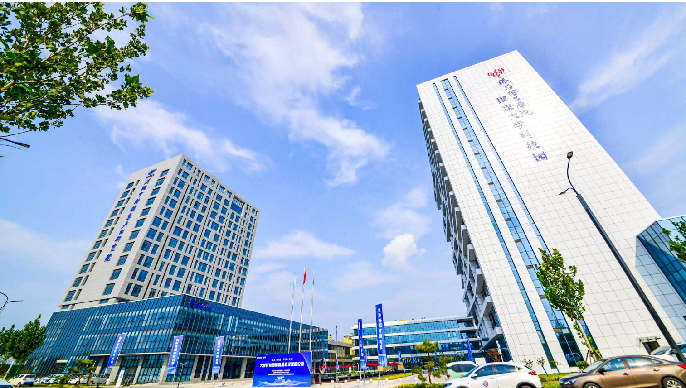

A technical map of how memorial diamonds move from biological sample to certified gemstone: raw material logistics, manufacturing clusters, quality control protocols, and international distribution networks.
The memorial diamond industry operates on a supply chain that spans three continents, four distinct production phases, and dozens of regulatory frameworks. For B2B partners — pet cremation services, funeral homes, and memorial retailers — understanding this supply chain is not academic. It determines delivery timelines, quality consistency, pricing structures, and risk exposure. This article maps the complete memorial diamond supply chain from raw material intake through international distribution, with specific attention to the manufacturing infrastructure and logistics systems that make the industry viable.
Key Takeaway: Memorial diamond supply chains are concentrated in China's Henan province, which hosts approximately 80% of global HPHT diamond manufacturing capacity. A typical supply chain cycle takes 60-90 days from sample receipt to finished delivery, with quality control checkpoints at carbon purification, graphitization, synthesis, and post-growth inspection.
Supply Chain Overview: Four Critical Phases
The memorial diamond supply chain can be divided into four discrete phases, each with distinct geographical concentrations, lead times, and risk profiles:
Phase 1 — Raw Material Intake and Carbon Extraction: Biological samples (hair, fur, ashes, botanical material) are received from end customers, typically at a partner's location or a regional collection hub. Carbon extraction and purification convert organic material into high-purity carbon powder or graphite. This phase is the most geographically distributed, occurring at or near the customer's location or at specialized purification facilities.
Phase 2 — Graphitization and Sample Preparation: Purified carbon is converted into crystalline graphite through high-temperature thermal processing. The resulting graphite must achieve a specific crystalline structure — measured by X-ray diffraction — to be suitable for HPHT diamond synthesis. This phase is typically co-located with synthesis facilities or performed at specialized preparation centers.
Phase 3 — HPHT Synthesis and Growth: Graphite is loaded into a cubic press or belt press and subjected to temperatures of 1,400-1,600°C and pressures of 5-6 GPa. Over 30-60 days, carbon atoms crystallize into diamond on a seed substrate. This is the longest and most capital-intensive phase, requiring specialized industrial equipment and trained operators.
Phase 4 — Post-Growth Processing and Distribution: Raw synthetic diamonds are extracted, inspected, cut, polished, and certified. The finished gemstone is then packaged and shipped to the partner or end customer through international courier networks with full insurance and tracking.
Approximately 80% of the world's HPHT synthetic diamonds are manufactured in Henan province, China. This concentration is not accidental. It is the result of decades of industrial clustering that has created a self-reinforcing ecosystem of equipment manufacturers, raw material suppliers, trained technicians, and logistics infrastructure.
The Henan cluster began developing in the 1960s when state-sponsored research programs established diamond synthesis as a strategic industrial capability. Over subsequent decades, this centralized research base spawned commercial manufacturers, equipment producers, and a labor pool with specialized expertise in high-pressure engineering. Today, a manufacturer in Henan can source replacement parts for a cubic press within 48 hours, hire technicians with 10+ years of HPHT experience, and access specialized graphite suppliers within the same province.
This clustering creates significant barriers to entry for would-be competitors. A memorial diamond manufacturer attempting to establish operations outside Henan faces higher equipment costs (due to shipping and import duties), longer repair times (due to distance from parts suppliers), and a shallower labor market. These factors explain why North American and European memorial diamond manufacturers typically charge 40-100% more for comparable products — their cost structure is fundamentally different.
For B2B partners evaluating suppliers, the geographic concentration has practical implications. A manufacturer based in the Henan cluster can offer shorter lead times, lower prices, and more consistent quality than a geographically isolated competitor. However, partners should verify that the manufacturer maintains direct control over its production facilities rather than subcontracting to third parties. Subcontracting introduces quality control risks and documentation gaps that can undermine traceability claims. Our supplier evaluation guide details the verification criteria partners should apply.
Carbon Sourcing and the First Mile Problem
The most logistically complex segment of the memorial diamond supply chain is the first mile: collecting biological samples from dispersed end customers and converting them into purified carbon suitable for diamond synthesis. Unlike conventional diamond manufacturing, where raw material (graphite powder) arrives in bulk from chemical suppliers, memorial diamond production begins with irregular, emotionally significant shipments of hair, cremated remains, or botanical material.
This creates three operational challenges. First, sample intake requires careful documentation and chain-of-custody protocols. Each sample must be uniquely identified, photographed, weighed, and logged at receipt. Second, biological samples have variable carbon content. Human hair contains approximately 45% carbon by weight, while cremated ashes contain 15-25% carbon depending on cremation temperature. A manufacturer must assess each sample's carbon yield to determine whether additional carbon is needed to achieve the target diamond size. Third, international shipping of biological materials triggers customs and biosecurity regulations that vary by country.
Experienced manufacturers have developed standardized protocols to address these challenges. Sample collection kits with pre-paid shipping labels, tamper-evident packaging, and unique tracking codes reduce intake errors. Carbon yield calculators based on sample type and weight help set customer expectations before production begins. And established relationships with international courier services expedite customs clearance for biological materials classified as "personal effects" rather than hazardous biological substances.
The carbon extraction process itself — converting biological material into purified carbon — typically occurs at or near the manufacturing facility. This co-location minimizes sample transfer risk and allows the manufacturer to verify carbon purity before committing the material to graphitization. BioGem Lab's patented carbon extraction process achieves carbon purity exceeding 99.9% through a multi-stage thermal and chemical purification pipeline that is integrated into our Luoyang laboratory facility.
Explore Our Manufacturing Infrastructure
See the complete HPHT synthesis pipeline from carbon purification through crystal growth, cutting, and certification — all under one roof.
Graphitization — the conversion of amorphous carbon into crystalline graphite — is frequently underestimated as a supply chain step. It is technically straightforward but critically important. If the graphite is not sufficiently crystalline, the HPHT synthesis will fail to produce gem-quality diamond, or the growth rate will be so slow that production economics become unsustainable.
The graphitization process involves heating purified carbon to 2,000-3,000°C in an inert atmosphere. The resulting material is analyzed by X-ray diffraction to confirm that the carbon has adopted a hexagonal crystalline structure with adequate crystallite size. Manufacturers with poor graphitization controls experience higher failure rates in the synthesis phase, which translates into longer lead times and higher costs passed to partners.
In a well-managed supply chain, graphitization adds 3-5 days to the production timeline and is treated as a hard quality gate. Material that fails graphitization standards is reprocessed rather than forwarded to synthesis. B2B partners should ask potential manufacturers about their graphitization pass rates — a rate below 95% indicates process instability that will affect delivery reliability. For a deeper technical analysis of this phase, see our article on graphitization in memorial diamond manufacturing.
HPHT Synthesis: Capital Equipment and Capacity Constraints
The synthesis phase is where the memorial diamond supply chain is most capital-intensive and where capacity constraints most directly affect lead times. A single cubic HPHT press costs $200,000-$500,000, occupies significant floor space, and consumes substantial electrical power. A mid-sized memorial diamond manufacturer might operate 10-30 presses; a large industrial facility could operate 100 or more.
Each press can grow one diamond at a time, and the growth cycle ranges from 30 days for smaller stones to 60+ days for stones approaching 1.5 carats. This means a manufacturer with 20 presses has a theoretical monthly capacity of 20 diamonds if all presses are dedicated to single-cycle production. In practice, maintenance schedules, setup time, and quality rejects reduce effective capacity by 15-25%.
For B2B partners, this capacity math has direct implications. A manufacturer serving both retail consumers and wholesale partners may experience capacity crunches during peak demand periods. Partners should verify that their manufacturer reserves dedicated press capacity for B2B orders or provides guaranteed turnaround commitments in the partnership agreement. Without such guarantees, a partner's customer could face extended delays that damage the partner's reputation — even though the delay originates upstream in the supply chain.
Power infrastructure is another underappreciated supply chain factor. HPHT presses draw significant electrical load, and facilities in regions with unreliable power grids require backup generators or redundant grid connections. Manufacturing interruptions due to power failure can ruin diamonds mid-growth, resulting in lost material and time. Partners sourcing from manufacturers in developing industrial regions should inquire about power stability and backup systems.
Quality Control: The Five Checkpoint System
Quality control in memorial diamond manufacturing is not a single inspection at the end of production. It is a distributed system of checkpoints that begins when the biological sample arrives and ends when the certified diamond ships. A robust quality system protects both the manufacturer and the B2B partner from costly errors, remakes, and customer disputes.
Checkpoint 1 — Sample Receipt Verification: Weight, photographic documentation, and unique identifier assignment. This establishes the baseline for traceability and carbon yield estimation.
Checkpoint 2 — Carbon Purity Confirmation: After extraction and purification, carbon content is verified by elemental analysis. The target is >99.9% carbon with controlled impurity profiles for nitrogen, sulfur, and trace metals.
Checkpoint 3 — Graphite Crystallinity Assessment: X-ray diffraction confirms that the graphitized carbon has the proper crystalline structure for diamond synthesis. Failed material is reprocessed before proceeding.
Checkpoint 4 — Post-Synthesis Inspection: Raw diamonds are examined for cracks, inclusions, color uniformity, and crystal structure. Stones that do not meet minimum standards are either re-cut for smaller sizes or, in severe cases, rejected entirely.
Checkpoint 5 — Independent Certification: Final diamonds are submitted to an independent gemological laboratory (IGI or equivalent) for grading and certification. The certificate documents the 4Cs (carat, color, clarity, cut) and provides verification that the stone is a genuine laboratory-grown diamond.
Partners should request documentation of each checkpoint for their orders, not merely the final certificate. A manufacturer that cannot provide checkpoint records may be skipping quality controls or subcontracting production to facilities with unverified processes. Contact BioGem Lab for sample quality documentation and process transparency protocols.
International Distribution: Customs, Insurance, and Last-Mile Delivery
The final segment of the memorial diamond supply chain — international distribution — is where many B2B partners experience unexpected friction. Memorial diamonds are high-value, lightweight items that travel through international courier networks with specific documentation requirements and customs classifications.
For customs purposes, laboratory-grown diamonds are classified under Harmonized System code 7104.90 (synthetic diamonds, unworked or simply sawn, cleaved or bruted) or 7104.90.91 (synthetic diamonds, cut but not mounted). Proper classification is essential because it determines duty rates and customs inspection probability. Most developed markets — the United States, Canada, the European Union, Australia — assess zero or minimal duties on laboratory-grown diamonds, but incorrect classification can trigger delays and penalties.
Insurance is non-negotiable for international diamond shipments. A fully insured courier service with declared value coverage protects both the manufacturer and the partner against loss or theft in transit. Partners should verify that their manufacturer ships with full-value insurance and provides tracking numbers with signature confirmation. Cutting corners on shipping insurance is a false economy — a single lost shipment can erase the profit margin on dozens of successful orders.
Delivery timeframes vary by destination and courier service level. Express courier (DHL/FedEx/UPS) from China to North America or Europe typically takes 3-7 business days. Standard international post can take 2-4 weeks. For B2B partners with time-sensitive customers, express courier is the only viable option, even though it adds $50-$100 to the per-unit shipping cost.

Industrial science parks like Luoyang University Science Park concentrate research facilities, equipment suppliers, and technical talent within a single logistics hub.
Supply Chain Risk Management for B2B Partners
Every supply chain has failure modes. The memorial diamond supply chain is no exception. B2B partners who understand the risks can build contingency plans that protect their business and their customers.
Capacity Risk: If a manufacturer's order volume exceeds its press capacity, lead times extend. Partners should monitor their manufacturer's capacity utilization and have backup suppliers qualified for overflow orders.
Quality Risk: Synthesis failures, inclusions, and color variations are inherent to diamond growth. A manufacturer with robust quality control will catch most issues before delivery, but some variability is unavoidable. Partners should establish clear remake policies with their manufacturer and communicate realistic expectations to customers.
Regulatory Risk: Changes in customs regulations, import duties, or gemological certification requirements can disrupt distribution. Partners sourcing from international manufacturers should monitor regulatory developments in their target markets and maintain flexible shipping arrangements.
Financial Risk: Memorial diamond manufacturers require significant working capital to maintain equipment and raw material inventory. A financially unstable manufacturer may delay orders, cut quality corners, or cease operations entirely. Partners should evaluate manufacturer financial stability before entering exclusive arrangements. Signs of financial stress include frequent payment-term changes, delayed deliveries without explanation, and requests for large advance deposits.
For partners evaluating white-label memorial diamond programs, our white-label guide provides a structured framework for supplier qualification and partnership structuring that addresses these risk factors.
The Future of Memorial Diamond Supply Chains
The memorial diamond supply chain is evolving in three directions that matter to B2B partners. First, automation is reducing the labor intensity of carbon extraction and sample preparation, which will shorten lead times and reduce costs. Second, blockchain-based traceability systems are emerging that allow end customers to verify the chain of custody from biological sample to finished diamond through an immutable digital record. Third, distributed manufacturing models are being tested in which smaller synthesis facilities operate closer to end markets, reducing shipping times and import complexity.
Of these trends, traceability is the most immediately relevant to B2B partners. Customers paying premium prices for memorial diamonds increasingly expect documentary proof that their diamond was grown from their specific biological sample. Manufacturers that can provide detailed production records, sample photographs, and independent certification will command partner preference over competitors with opaque processes.
BioGem Lab's supply chain is designed around transparency at every phase. From sample intake photography through carbon purity reports, synthesis batch records, and IGI certification, partners receive complete documentation that supports their own customer communication. Explore our partnership programs to see how supply chain transparency becomes a competitive advantage for your business.
Patent Notice: BioGem Lab's carbon extraction and purification technology is protected under CNIPA Patent No. ZL 2010 1 0565778.9, with continuous refinement since 2012.
Frequently Asked Questions
Where are most memorial diamonds manufactured?
The majority of memorial diamonds are manufactured in China, specifically in the Henan province, which accounts for approximately 80% of global HPHT diamond production. The region has developed a concentrated industrial cluster with specialized equipment manufacturers, trained technicians, and established logistics networks. A smaller number of memorial diamond manufacturers operate in the United States and Europe, typically at higher price points with longer turnaround times.
How long does the memorial diamond supply chain take from sample to delivery?
A typical memorial diamond supply chain takes 60-90 days from biological sample receipt to finished diamond delivery. Carbon extraction and purification: 7-14 days. Graphitization: 3-5 days. HPHT synthesis: 30-60 days depending on carat size. Cutting and polishing: 7-14 days. Certification and quality control: 5-7 days. International shipping: 3-10 days depending on destination and customs clearance.
What quality control checkpoints exist in memorial diamond manufacturing?
Quality control in memorial diamond manufacturing includes: (1) Carbon purity verification after extraction — carbon content must exceed 99.9%. (2) Graphite crystallinity assessment — X-ray diffraction confirms adequate crystalline structure for diamond synthesis. (3) Post-synthesis inspection — raw diamonds are examined for cracks, inclusions, and color uniformity. (4) Cut quality verification — proportions, symmetry, and polish are measured against industrial standards. (5) Independent certification — IGI or equivalent gemological laboratory issues a certificate verifying the diamond's 4Cs and origin.
How do customs and import regulations affect memorial diamond distribution?
Memorial diamonds are classified as synthetic or laboratory-grown diamonds for customs purposes, not as biological materials. They require standard gemstone import documentation including a commercial invoice, certificate of origin, and gemological certification. Most countries do not restrict the import of laboratory-grown diamonds, though valuation for duty purposes varies. The United States, Canada, and European Union typically assess duties at 0-5% on laboratory-grown diamonds. Proper Harmonized System (HS) code classification — usually 7104.90 for synthetic diamonds — is essential for smooth customs clearance.
What should B2B partners evaluate when selecting a memorial diamond manufacturer?
B2B partners should evaluate: (1) Production capacity — number of HPHT presses and monthly output capability. (2) Quality consistency — defect rates, color grade distribution, and certification pass rates. (3) Traceability systems — sample tracking from receipt through delivery with documented chain of custody. (4) International shipping experience — familiarity with customs documentation, insurance, and time-definite delivery. (5) Communication infrastructure — ability to provide status updates, handle inquiries in your language, and resolve issues promptly. (6) Financial stability — manufacturing diamonds requires significant capital equipment; a financially unstable supplier risks production delays or business closure.
Related Articles
B2BMay 2026
How to Choose a Memorial Diamond Supplier
Eight essential criteria for evaluating memorial diamond manufacturing partners — from production capability and certification quality to traceability systems and pricing transparency.
Lab-Grown Diamond Manufacturing: Industrial Process Explained
A complete technical guide to industrial lab-grown diamond manufacturing — from carbon purification through HPHT synthesis, crystal growth, cutting, and quality validation.
Ready to Integrate Memorial Diamonds Into Your Supply Chain?
BioGem Lab provides white-label memorial diamond manufacturing with full supply chain transparency, documented quality control at every checkpoint, and reliable international distribution to North America, Europe, and Asia-Pacific.